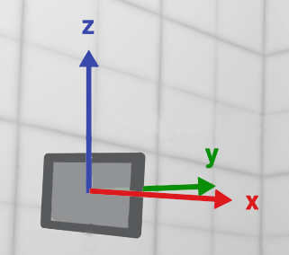
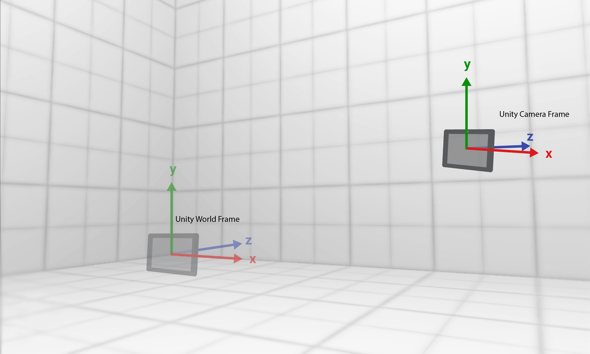

Tango开发概览
Tango是利用计算机视觉技术来使得设备能够理解其在真实环境中的姿态的技术平台。Tango设备一般配备有一个广角相机(鱼眼相机)、一个深度相机，精确的传感器时间标记和一个能够使应用开发者使用运动追踪、区域学习和深度感知的软件技术堆栈。
背景知识
坐标系
Tango使用两个不同的遵循右手法则的坐标系，分别是右手局部坐标系和右手Android坐标系。
右手局部坐标系:X轴正方向为水平向右，Z轴竖直向上，Y轴为深度方向垂直向前远离用户。

右手Android坐标系:X轴正方向为水平向右，Y轴竖直向上，Z轴为垂直向后指向用户。

使用运动追踪时的坐标系对应关系如下：
| 基础帧 | 坐标系 |
|---|---|
| COORDINATE_FRAME_START_OF_SERVICE | 右手局部坐标系 |
| COORDINATE_FRAME_AREA_DESCRIPTION | 右手局部坐标系 |
| COORDINATE_FRAME_DEVICE | 右手Android坐标系 |
OpenGL 坐标系
OpenGL世界坐标和相机坐标使用与右手Android类似的坐标系。

Unity 坐标系
Unity世界帧和相机帧使用左手坐标系：X轴水平向右，Y轴竖直向上，Z轴垂直向前远离用户。

坐标帧转换
OpenGL和Unity中，世界帧定义了场景的原点，相机帧表示了相机的视点。由Tango API提供的位姿数据必须转换到合适的坐标系下。这里介绍一下转换的数学基础。
使用下面的符号表示来代表可以被用来将一个向量在目标坐标帧和基础组欧标帧间进行转换的矩阵。
$$_{ Target }^{ Base }{ T }$$
举例俩说，使用设备的位姿DEVICE(D)作为目标坐标帧和START_OF_SERVICE(SS)作为基础坐标帧，表示为:
$$_{ SS }^{ D }{ T }$$
将Tango位姿数据转换到OpenGL坐标系下
使用两个变换来将Tango位姿数据转换到OpenGL相机坐标帧下。第一个变换将Tango的START_OF_SERVICE(SS)坐标帧转换为OpenGL World(OW)坐标帧。
$$_{ OW }^{ SS }{ T } = \begin{bmatrix} 1&0&0&0 \\ 0&0&-1&0 \\ 0&1&0&0 \\ 0&0&0&1 \end{bmatrix}$$
第二个变换将OpenGL Camera(OC)坐标帧转换为Tango Device(D)下，由于两个帧使用相同的坐标系，所以转换矩阵为单位阵。
$$_{ OC }^{ D }{ T } = \begin{bmatrix} 1&0&0&0 \\ 0&1&0&0 \\ 0&0&1&0 \\ 0&0&0&1 \end{bmatrix}$$
通过按序相乘变换矩阵，可以获得从API到OpenGL相机帧的变换矩阵：
$$_{ OC }^{ OW }{ T } = _{ SS }^{ OW }{ T } * _{ D }^{ SS }{ T } * _{ OC }^{ D }{ T }$$
将Tango位姿数据转换到Unity坐标系下
与转换为到OpenGL下类似，首先在START_OF_SERVICE(SS)和Unity World（UW)下转换。
$$_{ SS }^{ UW }{ T } = \begin{bmatrix} 1&0&0&0 \\ 0&0&1&0 \\ 0&1&0&0 \\ 0&0&0&1 \end{bmatrix}$$
然后是Unity Camera(UC)与Tango Device(D)转换。
$$_{ UC }^{ D }{ T } = \begin{bmatrix} 1&0&0&0 \\ 0&1&0&0 \\ 0&0&-1&0 \\ 0&0&0&1 \end{bmatrix}$$
连乘得到转换矩阵。
$$_{ UC }^{ UW }{ T } = _{ SS }^{ UW }{ T } * _{ D }^{ SS }{ T } * _{ UC }^{ D }{ T }$$
引用帧
为了执行运动追踪，设备报告自己的位姿(位置和方向)相对于给定的引用帧，该帧被认为在三维空间中固定不变。举例来说设备报告“相对于我开始运动追踪的地方，我现在在前方三尺、高度一尺的位置，并向右旋转了30度”。这样设备通过使用有意义的方向信息告知了它的位置：从初始位置开始前方三尺，高度一尺；还有当前它的方向，相对于初始位置向右旋转了30度。为了使用运动追踪，需要设定以下两个帧：
- 基础帧，参考帧，在三维空间中固定不变的帧，例
COORDINATE_FRAME_START_OF_SERVICE。 - 目标帧，想要测量的帧，运动追踪中通常为
COORDINATE_FRAME_DEVICE。
运动追踪的坐标帧
Tango API提供的用于运动追踪的坐标帧如下：
| 目标帧 | 基础帧 |
|---|---|
| COORDINATE_FRAME_DEVICE | COORDINATE_FRAME_START_OF_SERVICE |
| COORDINATE_FRAME_DEVICE | COORDINATE_FRAME_AREA_DESCRIPTION |
| COORDINATE_FRAME_START_OF_SERVICE | COORDINATE_FRAME_AREA_DESCRIPTION |
组件对齐的坐标帧
| 目标帧 | 基础帧 |
|---|---|
| COORDINATE_FRAME_DEVICE | COORDINATE_FRAME_IMU |
| COORDINATE_FRAME_CAMERA_COLOR | COORDINATE_FRAME_IMU |
| COORDINATE_FRAME_CAMERA_DEPTH | COORDINATE_FRAME_IMU |
| COORDINATE_FRAME_CAMERA_FISHEYE | COORDINATE_FRAME_IMU |
一些设备需要对齐多个数据源，比如从彩色相机和深度相机获取的数据。可以将COORDINATE_FRAME_IMU作为基础帧，与其他组件目标帧组合。
结合数据中的运动追踪坐标帧和时间戳，计算出的偏移量可以在时间和空间上对多个传感器输入有更深层的了解。这在对齐和组合多个数据源时很有必要。
由于设备设计为刚体模型，这些偏移量被认为不可更改，且在API中也不会发生变化。然而，设备的组件在空间总的位置是变化的。当前Tango API并不会更新外部参数。这些值是在工厂模式下一次标定完成或从工厂的描述设计文件中获取。需要获得更加精确的数据，应用开发者需要实现自己的标定程序来让终端用户执行。
COORDINATE_FRAME_IMU基础帧给设备的所有其他组件提供了一个共同的引用点。这个基础帧的原点并不必与其他任一个组件相同，而且可以在设备间变化。与其他的Android传感器类似，设备的坐标帧轴与设备的自然方向对齐。这个工厂定义的方向可能与应用想要的方向并不一致。为了最大化兼容性，不要假定Tango设备有一个自然的landscape或portrait方向。因而，使用Android的getRotation()方法来确定屏幕的旋转，并使用Android的remapCoordinateSystem()方法来将传感器坐标映射到屏幕坐标系。
内参/外参
对设备进行标定时，标定程序执行一系列的测量来了解设备的相机状况。这个测量值称为相机内部参数。这个信息是必要的，举个例子，开发增强现实应用时，需要将虚拟内容渲染在真是的视频帧上，需要保证设备相机的视角(field of view, FOV)与虚拟相机的FOV相同。另一个重要的地方是要确保虚拟物体在FOV下指定的位置处。Tango设备通过使用惯性传感器IMU来确定设备的位姿。而相机与IMU的位置并不一致，所以Tango设备的位姿测量值与真实相机的位置会有一个小的偏差。这个偏差，尽管很小，但可能会使得虚拟物体的位置出现错误。故而必须选定一个合适的坐标帧对。组件间的距离被称为外部参数。
FOV
视角是指设备从左到右(水平FOV)和从上到下(竖直FOV)能看到的范围，使用度数来表示。
焦距
焦距是一个内部参数，可以用来确定FOV的大小，在大多数传统相机上，可以通过调整相机来放大和缩小图像。而Tango设备上，焦距是固定的，需要注意的是：
- 在通过Tango API获取内部参数时，获得的是两个焦距值x和y。
- 必须在方程中使用这些值来确定渲染时的FOV。
使用Tango API获取内部参数
TangoCameraIntrinsics ccIntrinsics; TangoService_getCameraIntrinsics(TANGO_CAMERA_COLOR, &ccIntrinsics);
计算相机的FOV
从Tango API获取的参数如下：
| 参数 | 描述 |
|---|---|
| width | 图像的像素宽度 |
| height | 图像的像素高度 |
| fx | x轴的焦距，像素为单位 |
| fy | y轴的焦距，像素为单位 |
在大多数系统中，$fx = fy$。
举例来说，获取的的数据如下：
ccIntrinsics.height=720; ccIntrinsics.fy=1042.0;
因此，水平FOV为：
Vertical FOV = 2*atan(0.5*720.0/1042.0) = 2*19.0549 deg = 38.1098 deg
水平和竖直FOV的计算方程为:
$$
Horizontal \quad FOV = 2 * atan(0.5 * width / fx) - 2 * \arctan(\frac{width/2}{fx}) \\
Vertical \quad FOV = 2 * atan(0.5 * height / fx) - 2 * \arctan(\frac{height/2}{fx})
$$
如果渲染引擎只支持一个FOV值，则需要查看引擎文档来确定使用哪一个FOV。如果需要使用对角FOV，方程如下：
$$Diagonal \quad FOV = 2*atan(sqrt((width/2fx)^2 + (height/2fy)^2)) = 2 * \arctan(\frac{height/2}{fy})$$
Tango相机畸变模型
相机的镜头存在着缺陷，会有一些畸变的存在。对大多数场景来说，这个畸变可以忽略不计，不过，在一个Tango设备进行标定时，测量并存储了这些畸变信息，可以使用TangoCameraIntrinsics结构来获取。
Tango使用两个镜头畸变模型：
1.如果使用运动追踪相机(鱼眼相机)，那么FOV畸变模型被使用，从结构体中获得标定类型为TANGO_CALIBRATION_EQUIDISTANT。
2. 如果使用彩色相机，那么多项式畸变模型被使用，从结构体重获得的标定类型为TANGO_CALIBRATION_POLYNOMIAL_3_PARAMETERS。
使用Tango API获取外部参数
对于增强现实应用，需要计算IMU和相机之间的位置，这个测量值成为外部参数。因为设备上的组件位置基本不变，所以只需要计算一次即可。
//Color Camera Frame with respect to IMU Frame TangoPoseData cToIMUPose; TangoCoordinateFramePair cToIMUPair; cToIMUPair.base = TANGO_COORDINATE_FRAME_IMU; cToIMUPair.target = TANGO_COORDINATE_FRAME_CAMERA_COLOR; TangoService_getPoseAtTime(0.0, cToIMUPair, &cToIMUPose); cToIMU_position = ToVector(cToIMUPose.translation[0], cToIMUPose.translation[1], cToIMUPose.translation[2]); cToIMU_rotation = ToQuaternion(cToIMUPose.orientation[3], cToIMUPose.orientation[0], cToIMUPose.orientation[1], cToIMUPose.orientation[2]);
通过选择合适的坐标帧对来计算两个设备组件的外部参数。
Tango服务集成
使用Tango服务，需要在AndroidManifest.xml中设置:
<uses-library android:name="com.projecttango.libtango_device2" android:required="true" />
在使用任何Tango API前，必须做以下步骤：
1. 绑定并启动Tango服务。
2. 定义Tango配置信息。
3. 开始追踪数据。
有第4个步为可选，可以检测Tango核心的版本。如果选择实现这一步，那么确保它是第一步操作。上述三个步骤不可缺少，顺序也不可更改。
C/C++应用
C/C++应用的服务绑定代码需要通过Java层来实现。对于JNI代码，添加一个服务绑定函数到activity来开启Tango，对于native C/C++来说，添加服务绑定函数到NativeActivity的Java包装器中。在实例代码TangoInitializationHelper.java中包装了大多数的绑定函数，建议直接重用这部分代码。注意Tango函数，包括设置和获取ADF元数据，和设置Tango配置，只能在服务绑定后调用。
使用TangoInitializationHelper，在Activity类中，添加如下代码：
// 连接Tango服务 ServiceConnection mTangoServiceConnection = new ServiceConnection() { public void onServiceConnected(ComponentName name, IBinder service) { // 同步避免Tango在连接中途丢失连接 synchronized (HelloMotionTrackingActivity.this) { // 通过JNI设置绑定对象到C API // 调用TangoService_setBinder(env, service); // 现在可以调用Tango函数，比如 // TangoService_connect(config); } } public void onServiceDisconnected(ComponentName name) { // 如果Tango崩溃或升级等，需要在这里处理 } }; @Override protected void onResume() { super.onResume(); TangoInitializationHelper.bindTangoService(this, mTangoServiceConnection); } @Override protected void onPause() { super.onPause(); synchronized (this) { unbindService(mTangoServiceConnection); } }
Java应用
Java应用需要集成Tango Mira发行包libtango_clinet.jar，里面包含了最新的Tango构造函数。
Tango mTango; @Override protected void onResume() { super.onResume(); // 初始化Tango服务作为一个一般的Android服务 // 由于我们在onPause中调用mTango.disconnect(),这会解除Tango服务绑定， // 因而每次调用onResume，需要创建一个新的tango对象 mTango = new Tango(MotionTrackingActivity.this, new Runnable() { // Tango准备完成后传递一个可运行对象给UI线程调用，这个可运行对象在新线程运行 // 当tango准备OK后，我们只在没有UI线程改变参与时安全的调用tango 函数。 @Override public void run() { // 配置并运行Tango TangoConfig config = mTango.getConfig(mConfig.CONFIG_TYPE_CURRENT); mTango.connect(mConfig); } }); } @Override Protected void onPause() { super.onPause(); // 解除Tango Service的绑定，如果不解除，将会收到服务泄露异常。 mTango.disconnect(); }
Unity应用
只需导入TangoUnitySDK.unitypackage即可。
运动追踪
运动追踪指Tango设备能够在三维空间追踪自己的运动和方向。设备上下前后左右移动和旋转都可以知晓。与鼠标的功能类似，但是不限于二维平面，在整个三维空间中都可以使用。
使用
设备在三维空间运动时，会以最高100次每秒的速度来计算位置和方向。每次计算的结果称为设备的位姿。Tango API 提供了两种方式来获取位姿数据：回调函数来获取实时最近的位姿更新值和获取一个指定时间的位姿测量值的函数。返回的数据主要由两部分组成：平移向量和旋转四元数。位姿配置为特定的引用帧对，必须指定一个目标帧及它相对应的基础帧，给出的数据是目标帧相对于基础帧的相对位姿。
Tango使用视觉-惯性测量，VIO，来实现运动追踪。标准的视觉测量使用相机图像来确定位姿变化，通过查看在图像中的相同特征点的不同位置。视觉-惯性测量使用了惯性传感器来辅助视觉测量。这使得Tango设备可以在三维空间中更精确的测量方向和运动情况。
注意
. Tango并不提供全局定位或使用GPS来定位。只是追踪一个区域内设备的相对位置变化。
. Tango和Android不是硬实时系统。主要是因为Android的Linux内核不能提供在设备上运动软件的执行时间的强制保障。所以，Tango是一个软实时系统。所有来自Tango的数据会包括一个时间戳，精度为1微秒。
. 学习区域的同时追踪用户当前的位置通常称为即时定位与地图构建，即SLAM。
C
正常的运动追踪系统包含三个状态：TANGO_POSE_INITIALIZING,TANGO_POSE_VALID和TANGO_POSE_INVALID。第一个状态表明系统当前还未准备好，位姿数据不可获取。第二个状态表明系统工作正常。第三个状态表明系统认为测量值无效，需要重新初始化。TANGO_POSE_UNKNOWN状态用于所有其它情况。
当处于TANGO_POSE_INVALID时，系统有两种方式重新初始化。如果config_enable_auto_recovery设置为true，那么系统会直接进入TANGO_POSE_INITIALIZING状态。会使用上一个有效的位姿作为恢复的起点。如果设置为false，系统将会暂停并一直返回TANGO_POSE_INVALID直到TangoService_resetMotionTracking()被调用。与自动恢复不同，这一步会重置起点为原点。系统状态在位姿status_pose中获取。
为了使用运动追踪，必要配置TangoConfig的config_enable_motion_tracking为true，在默认状态下，已经设置为true。
获得位姿数据，还需要设置要使用的坐标帧对，对于基本的运动追踪，有两个组合选项：设备相对于服务开始的位姿，和设备相对前一帧的位姿。相对于服务开始，位姿数据可以在回调函数和轮询形式中获得。而相对于前一阵的位姿，只能在回调函数中获得。
基于回调函数
使用回调函数的方法，需要定义坐标帧对，并构造onPoseAvailable()回调函数，示例如下：
TangoCoordinateFramePair pairs[2] = { { TANGO_COORDINATE_FRAME_START_OF_SERVICE, TANGO_COORDINATE_FRAME_DEVICE }, { TANGO_COORDINATE_FRAME_PREVIOUS_DEVICE_POSE, TANGO_COORDINATE_FRAME_DEVICE } }; static void onPoseAvailable(void* context, const TangoPoseData* pose) { if (pose->frame.base == TANTANGO_COORDINATE_FRAME_START_OF_SERVICE && pose->frame.target == TANGO_COORDINATE_FRAME_DEVICE) { // 处理相对于服务开始的位姿数据 } else if (pose->frame.base == TANGO_COORDINATE_FRAME_PREVIOUS_DEVICE_POSE && pose->frame.target == TANGO_COORDINATE_FRAME_DEVICE) { // 处理相对于上一帧的位姿数据 } }
然后将回调函数绑定到TangoService_connectOnPoseAvailable。
// 回调函数会在服务连接时被调用 if (TangoService_connectOnPoseAvailable(2, pairs, onPoseAvailable) != TANGO_SUCCESS) { // 处理错误情况 }
基于轮询
使用轮询方式，需要先指定坐标帧对。对于简单的运动追踪，需要设置为相对于服务开始。
TangoCoordinateFramePair frames_of_reference; frames_of_reference.base = TANGO_COORDINATE_FRAME_START_OF_SERVICE; frames_of_reference.target = TANGO_COORDINATE_FRAME_DEVICE;
然后按需调用TangoService_getPoseAtTime()，下面的示例，时间戳设定为0.0来获取最近的位姿。如果指定一个特定的时间戳，系统将会返回一个在确定时间处的插值位姿，时间戳是相对于是被启动的时间。
// 查询 100 个位姿在~30Hz. TangoPoseData pose; int i = 0; for (i = 0; i < 100; ++i) { usleep(33000); TangoService_getPoseAtTime(0.0, frames_of_reference, &pose); // pose包含了最近的位姿数据 }
Java
与使用C类似，示例代码如下：
基于回调
private void setTangoListeners() { final ArrayList<TangoCoordinateFramePair> framePairs = new ArrayList<TangoCoordinateFramePair>(); framePairs.add(new TangoCoordinateFramePair( TangoPoseData.COORDINATE_FRAME_START_OF_SERVICE, TangoPoseData.COORDINATE_FRAME_DEVICE)); // Listen for new Tango data mTango.connectListener(framePairs, new OnTangoUpdateListener() { @Override public void onPoseAvailable(final TangoPoseData pose) { // Process pose data from device with respect to start of service } @Override public void onXyzIjAvailable(TangoXyzIjData arg0) { // We need this callback even if we don't use it } @Override public void onTangoEvent(final TangoEvent event) { // This callback also has to be here } }); }
基于轮询
TangoCoordinateFramePair frames_of_reference; frames_of_reference.baseFrame = TangoPoseData.COORDINATE_FRAME_START_OF_SERVICE; frames_of_reference.targetFrame = TangoPoseData.COORDINATE_FRAME_DEVICE; new Thread(new Runnable() { final int pollingUpdatePeriodMilliseconds = 66; @Override public void run() { while (true) { try { Thread.sleep(pollingUpdatePeriodMilliseconds); } catch (InterruptedException e) { e.printStackTrace(); } try { final TangoPoseData queryPoseStartDevice = mTango.getPoseAtTime(0.0, frames_of_reference); } catch (TangoErrorException e) { e.printStackTrace(); } } } }).start();
区域学习
区域学习指设备能够看见并记忆环境空间的视觉特征的能力，特征包括边、角和其它唯一的特征，这样设备能够在之后辨识出区域。为了实现这个功能，Tango在设备上存储了可识别的视觉特征的数学描述。允许设备快速匹配它当前看到的内容。当Tango设备学习了一个区域后，它可以在运动追踪的基础上提供改进的信息：
- 通过执行“偏移修正”，提升轨迹的精确性。
- 通过执行“重定位”，来确定设备在已经学习的区域内的位置。
使用
C
在TangoConfig中有两个配置选项与区域学习相关。
第一个是config_load_area_description_UUID选项，如果设置了一个UUID，对应的区域描述文件ADF会被加载，然后执行重定位。
if (TangoConfig_setString(config_, "config_load_area_description_UUID", "ADF UUID to load") != TANGO_SUCCESS) { // 处理错误情况 }
第二个选项是config_enbale_learning_mode，设置为true，设备将构建当前节点的一个区域描述。
if (TangoConfig_setBool(config_, "config_enable_learning_mode", true) != TANGO_SUCCESS) { // 处理错误情况 }
区域描述可以在之后使用TangoService_saveAreaDescription()来保存，这个调用会运行较长时间，所以不要在UI线程上调用。
使用结合区域学习的运动追踪
通常，与使用基本的运动追踪类似，需要定义感兴趣的坐标帧对，然后使用回调或轮询。对于区域学习，有两个坐标帧对。
base == TANGO_COORDINATE_FRAME_AREA_DESCRIPTION和target == TANGO_COORDINATE_FRAME_DEVICE组合可以获取设备相对于区域苗淑原点的位姿，包括便宜修证。如果加载了ADF，位姿数据只有在重定位到ADF且原点与ADF相同时才可使用。如果没有加载ADF，那么位姿数据在初始化后直接可用，且原点与服务开始时相同。
base == TANGO_COORDINATE_FRAME_AREA_DESCRIPTION和target == TANGO_COORDINATE_FRAME_START_OF_SERVICE组合提供区域描述文件和服务开始之间的位置偏移。这个组合只有在重定位发生时更新。
应用应该使用TANGO_COORDINATE_FRAME_DEVICE相对于TANGO_COORDINATE_FRAME_AREA_DESCRIPTION来追踪设备的运动，且使用TANGO_COORDINATE_FRAME_START_OF_SERVICE相对于TANGO_COORDINATE_FRAME_AREA_DESCRIPTION作为重定位信号。
static void onPoseAvailable(void* context, const TangoPoseData* pose) { // 获取设备相对于ADF的位姿 if (pose->frame.base == TANGO_COORDINATE_FRAME_AREA_DESCRIPTION && pose->frame.target == TANGO_COORDINATE_FRAME_DEVICE) { // 处理新的ADF } // 获取服务开始相对于ADF的位姿 else if (pose->frame.base == TANGO_COORDINATE_FRAME_AREA_DESCRIPTION && pose->frame.target == TANGO_COORDINATE_FRAME_START_OF_SERVICE) { // 处理重定位 } }
使用ADF
ADF具有一些可以使用的元数据，所以不必单独使用UUID。元数据包括键值对。
设定元数据
void TangoData::SetUUIDMetadataValue(const char* uuid, const char* key, int value_size, const char* value) { TangoAreaDescriptionMetadata metadata; if (TangoService_getAreaDescriptionMetadata(uuid, &metadata) != TANGO_SUCCESS) { LOGE("TangoService_getAreaDescriptionMetadata(): Failed"); } if (TangoAreaDescriptionMetadata_set(metadata, key, value_size, value) != TANGO_SUCCESS) { LOGE("TangoAreaDescriptionMetadata_set(): Failed"); } if (TangoService_saveAreaDescriptionMetadata(uuid, metadata) != TANGO_SUCCESS) { LOGE("TangoService_saveAreaDescriptionMetadata(): Failed"); } }
获取元数据
char* TangoData::GetUUIDMetadataValue(const char* uuid, const char* key) { size_t size = 0; char* value; TangoAreaDescriptionMetadata metadata; if (TangoService_getAreaDescriptionMetadata(uuid, &metadata) != TANGO_SUCCESS) { LOGE("TangoService_getAreaDescriptionMetadata(): Failed"); } if (TangoAreaDescriptionMetadata_get(metadata, key, &size, &value) != TANGO_SUCCESS) { LOGE("TangoAreaDescriptionMetadata_get(): Failed"); } return value; }
显示所有的UUID
char* uuid_list; // uuid_list将包含一个逗号分隔的UUID列表 if (TangoService_getAreaDescriptionUUIDList(&uuid_list) != TANGO_SUCCESS) { LOGI("TangoService_getAreaDescriptionUUIDList"); } // 解析uuid列表来得到单个的uuid if (uuid_list != NULL && uuid_list[0] != '\0') { LOGI("uuid list: %s", uuid_list); vector<string> adf_list; char* parsing_char; parsing_char = strtok(uuid_list, ","); while (parsing_char != NULL) { string s = string(parsing_char); LOGI("parsed: %s", parsing_char); adf_list.push_back(s); parsing_char = strtok(NULL, ","); } int list_size = adf_list.size(); LOGI("Loaded ADF: %s", adf_list[list_size - 1].c_str()); if (TangoConfig_setString(config_, "config_load_area_description_UUID", adf_list[list_size - 1].c_str()) != TANGO_SUCCESS) { LOGE("config_load_area_description_uuid Failed"); return false; } } else { LOGE("No area description file available, no file loaded."); }
Java
加载区域描述
try { mConfig.putString(TangoConfig.KEY_STRING_AREADESCRIPTION, uuid); } catch (TangoErrorException e) { // 处理错误情况 }
ArrayList<String> fullUUIDList = new ArrayList<String>(); // 返回UUID列表 fullUUIDList = mTango.listAreaDescriptions(); // 加载最近的ADF if (fullUUIDList.size() > 0) { mConfig.putString(TangoConfig.KEY_STRING_AREADESCRIPTION, fullUUIDList.get(fullUUIDList.size() - 1)); }
学习模式
try { TangoConfig mConfig = mTango.getConfig(TangoConfig.CONFIG_TYPE_CURRENT); mConfig.putBoolean(TangoConfig.KEY_BOOLEAN_LEARNINGMODE, true); } catch (TangoErrorException e) { // 处理错误情况 }
使用Tango.saveAreaDescription()来保存ADF。
使用结合区域学习的运动追踪
@Override public void onPoseAvailable(TangoPoseData pose) { if (pose.baseFrame == TangoPoseData.COORDINATE_FRAME_AREA_DESCRIPTION && pose.targetFrame == TangoPoseData.COORDINATE_FRAME_DEVICE) { // 处理新的ADF } else if (pose.baseFrame == TangoPoseData.COORDINATE_FRAME_AREA_DESCRIPTION && pose.targetFrame == TangoPoseData.COORDINATE_FRAME_START_OF_SERVICE) { // 处理重定位 }
使用ADF
// 获取UUID名称 public String getName(String uuid) { TangoAreaDescriptionMetaData metadata = new TangoAreaDescriptionMetaData(); metadata = mTango.loadAreaDescriptionMetaData(uuid); byte[] nameBytes = metadata.get(TangoAreaDescriptionMetaData.KEY_NAME); if (nameBytes != null) { String name = new String(nameBytes); return name; } // Do something if null } // 设置 public void setName(String name, String uuid) { TangoAreaDescriptionMetaData metadata = new TangoAreaDescriptionMetaData(); metadata = mTango.loadAreaDescriptionMetaData(uuid); metadata.set(TangoAreaDescriptionMetaData.KEY_NAME, name.getBytes()); mTango.saveAreaDescriptionMetadata(uuid, metadata); } // 获取所有UUID ArrayList<String> mFullUUIDList; try { mFullUUIDList = mTango.listAreaDescriptions(); } catch(TangoErrorException e) { // handle the errors } if (mFullUUIDList.size() == 0) { // handle the fact that there's no ADFs stored }
深度感知
深度感知指设备能够了解到距离真实世界物体的距离。实现深度感知，Tango设备使用了深度技术，包括结构光、飞行时间和双目。结构光和飞行时间需要使用一个红外发射器和红外接收器。双目不需要。
深度感知可以用于：
. 游戏，检测用户是否到达一个墙壁或其他物体。
. 结合深度感知与运动追踪，设备可以测量区域中处于不同帧中的两点距离。
. 深度数据可以与彩色图形数据匹配来实现点云贴纹理。
使用
C
默认的TangoConfig中config_enable_depth为false，为了使用深度感知，需要设置为true.
// 开启深度 ret = (TangoConfig_setBool(config_, "config_enable_depth", true); if (ret != TANGO_SUCCESS) { // 处理错误情况 } // 指定点云模式为XYZC ret = TangoConfig_setInt32(tango_config_, "config_depth_mode", TANGO_POINTCLOUD_XYZC); if (ret != TANGO_SUCCESS) { // 处理错误情况 }
定义回调函数
回调函数需要负责分配内存
// 获取设备最大的顶点数 int temp = 0; if (TangoConfig_getInt32(config_, "max_point_cloud_elements", &temp) != TANGO_SUCCESS) { LOGE("Get max_point_cloud_elements Failed"); return false; } max_vertex_count = static_cast<uint32_t>(temp); // 分配深度缓存(每一个点云有四个值：X,Y,Z和C) depth_data_buffer = new float[4 * max_vertex_count];
定义onPointCloudAvailable()回调，不要在毁掉的数据上进行任何处理，只有在回调返回时才能接收到新数据。
static void onPointCloudAvailable(void* context, const TangoPointCloud* point_cloud) { memcpy(depth_data_buffer, point_cloud->points, point_cloud->num_points * 4 * sizeof(float)); // 处理任何其它必要的数据点云输出 }
最后，绑定回调函数.
if (TangoService_connectOnPointCloudAvailable(onPointCloudAvailable) != TANGO_SUCCESS) { // 处理错误情况 }
Java
配置Tango
try { mConfig = new TangoConfig(); mConfig = mTango.getConfig(TangoConfig.CONFIG_TYPE_CURRENT); mConfig.putBoolean(TangoConfig.KEY_BOOLEAN_DEPTH, true); } catch (TangoErrorException e) { // 处理错误情况 }
定义回调函数
private void setTangoListeners() { final ArrayList<TangoCoordinateFramePair> framePairs = new ArrayList<TangoCoordinateFramePair>(); framePairs.add(new TangoCoordinateFramePair( TangoPoseData.COORDINATE_FRAME_START_OF_SERVICE, TangoPoseData.COORDINATE_FRAME_DEVICE)); // 监听新的Tango数据 mTango.connectListener(framePairs, new OnTangoUpdateListener() { @Override public void onXyzIjAvailable(TangoXyzIjData arg0) { byte[] buffer = new byte[xyzIj.xyzCount * 3 * 4]; FileInputStream fileStream = new FileInputStream( xyzIj.xyzParcelFileDescriptor.getFileDescriptor()); try { fileStream.read(buffer, xyzIj.xyzParcelFileDescriptorOffset, buffer.length); fileStream.close(); } catch (IOException e) { e.printStackTrace(); } // 不要在毁掉内部处理数据，因为只有处理完成后才能接受新的数据 } @Override public void onPoseAvailable(final TangoPoseData pose) { // 处理来自设备相对于服务开始的位姿数据 } @Override public void onTangoEvent(final TangoEvent event) { // 处理Tango事件回调 }} });
2018-08-16 15:39:25